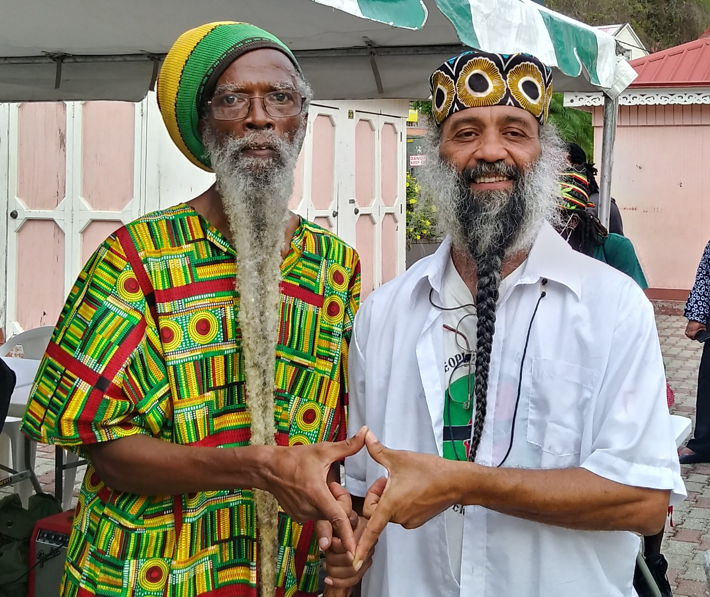

Private AfroCentric Tours Grenada
In the spirit of Ubuntu we welcome you to share the best of Grenadian hospitality. The island offers paradise where the locals know how to treat a guest because we reserve the best for our Guest.

An authentic Grenada Experience
- Private and Personalized
- 100% customizable to your interest.
- A knowledgeable local guide
- Private transportation.
- Pickup and Drop off.
- Advance Site booking on request.
- Duration 8 Hours extension possible.
Personalize your Itinerary
PAT Grenada purpose is to expose Grenada to visitors as our guest from an African perspective. The mission is to highlight the African presence in Grenada and show gratitude by remembering the courage and resilance of the ancestor that practiced the spirit of Ubuntu. I am because We are.
Hospitality is one tradition that remained with us through generations of struggle, pain and hard work. We have not always had abundance but we always knew abundance and the willingness to share.
I am confident in my ability to provide advice on the best sights and locations, ensuring you can enjoy the activities you wish to explore. So you can immerse yourself in the unparalleled beauty of the island, where the aroma of spices fill the air and every corner offers a breathtaking view. Create the experience you desire to captivate moments and memories that will last a lifetime.

Lunch
If you’re looking for a place to have lunch, I can help you find the perfect spot. Based on my experience, I can recommend restaurants for you to try. If you prefer, a lunchbox with your favorite refreshments, that could be arranged. Feeling adventurous, you can create your unique lunch experience on the nearest beach or in a tranquil, scenic spot. You can choose the menu and cost according to your diet and taste.
Private and Personal
Consider using part of the afternoons to visit a crater lake, waterfall, or beach? Plan a fun experience with relaxation, entertainment, and education focused on your interest. Just reach out with your enquiries, visit duration, and group size, and I will be happy to assist you in the creation, planning and manage the day that you desire.
Let PAT Grenada help ensure that you feel like family and not a visitor.